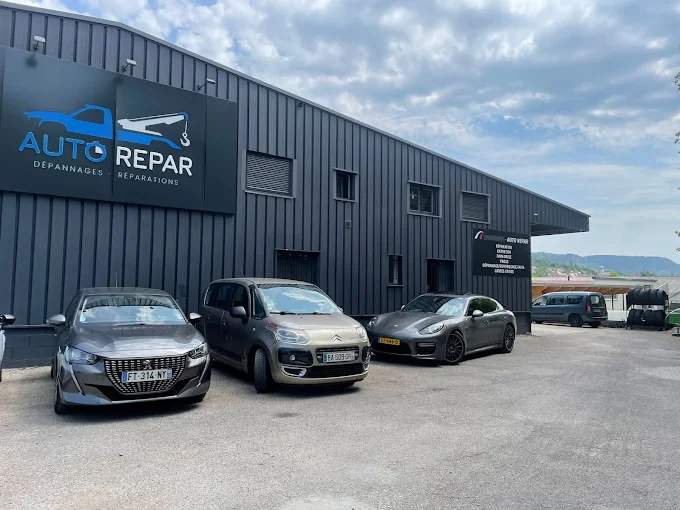
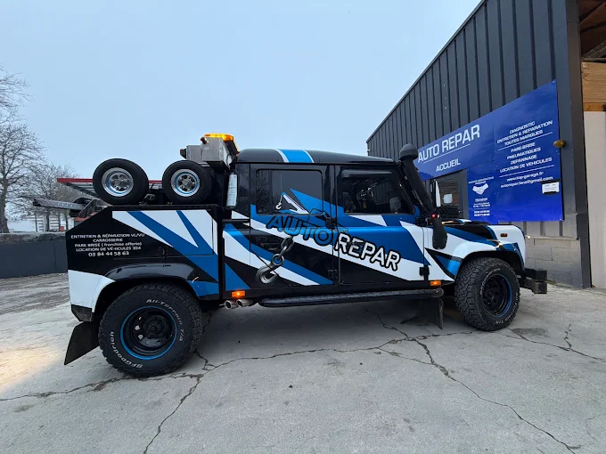
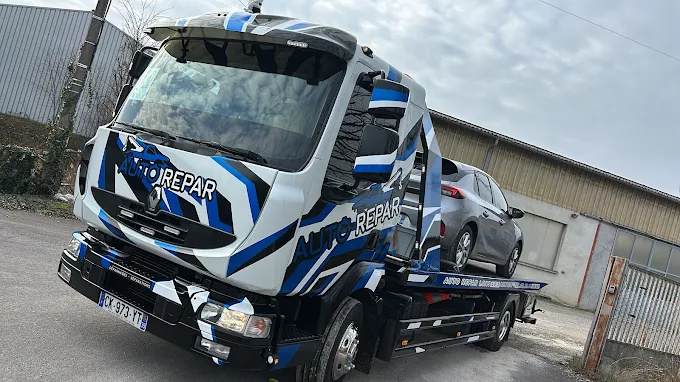
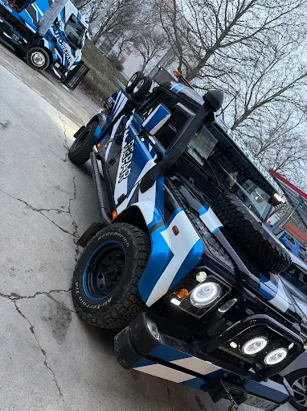

Lons-le-Saunier (39) & environs
Réparation, entretien et dépannage de votre véhicule, toutes marques. Révision constructeur, vidange, freinage, distribution, batterie, pneumatiques : notre atelier qualifié préserve votre garantie constructeur et respecte les préconisations d'origine.

À propos
GARAGE AUTO REPAR, réparateur automobile multimarques et membre du réseau TOP GARAGE, vous accueille pour la réparation, l'entretien et le dépannage de votre véhicule à LONS-LE-SAUNIER. Notre garage vous propose toutes les prestations mécaniques : révision constructeur, vidange, freinage, suspension, distribution, remplacement de batterie, montage/démontage de pneus, amortisseurs... L'équipe GARAGE AUTO REPAR intervient sur toutes les marques de voitures.
Chez GARAGE AUTO REPAR, la garantie constructeur est préservée dès le premier jour. Nos garagistes qualifiés et continuellement formés aux nouvelles technologies respectent strictement les préconisations des constructeurs, quel que soit le type de véhicule.
Nos prestations
Un atelier complet pour l'entretien mécanique, le diagnostic électronique et le dépannage de votre véhicule, toutes marques confondues.
Entretien courant réalisé selon les préconisations d'origine : la garantie constructeur reste préservée.
Disques, plaquettes de frein, amortisseurs et suspensions contrôlés et remplacés par des professionnels.
Remplacement de la distribution et de l'embrayage dans le respect des intervalles constructeur.
Changement de batterie, alternateur, démarrage et diagnostic électronique à la valise.
Montage, démontage et équilibrage des pneus, contrôle du parallélisme.
Assistance automobile pour véhicule immobilisé : intervention et remorquage rapide en cas de panne.
Notre garage
Découvrez notre atelier et nos véhicules d'intervention, prêts à intervenir rapidement en cas de panne dans tout le bassin lédonien.



Zone d'intervention
Basé à Lons-le-Saunier, GARAGE AUTO REPAR intervient pour la réparation, l'entretien et le dépannage automobile dans tout le bassin lédonien et les communes environnantes du Jura (39) et de l'Ain.
Contact
Appelez directement GARAGE AUTO REPAR : notre équipe vous répond rapidement pour toute urgence, demande de devis ou prise de rendez-vous.
Appelez AutoRepar03 84 00 00 00